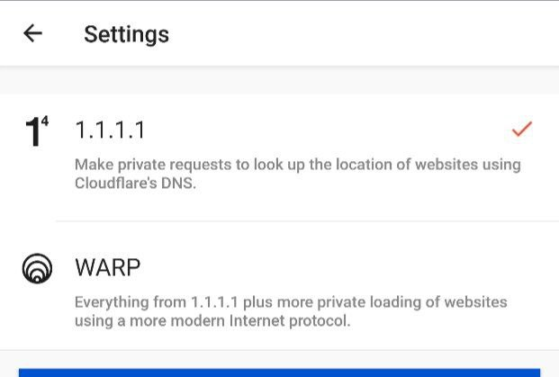
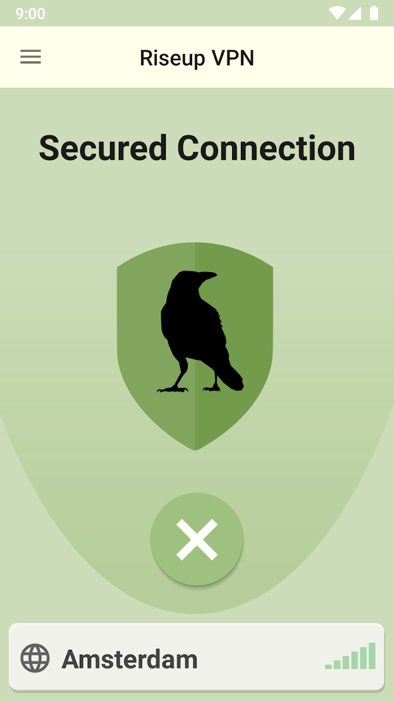
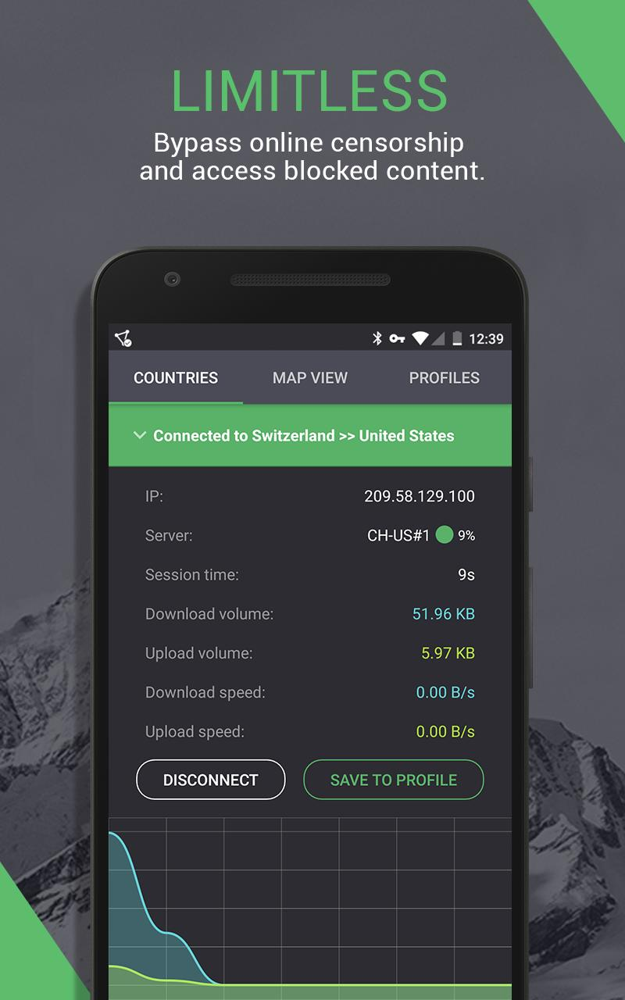

Cloudflare’in ücretsiz DNS servisi. Reklamsız, kayıt gerektirmiyor, hızlı.
Bağlanmıyorsa ayarlardan 1.1.1.1’i seçebilirsiniz.

Kar gütmeyen kuruluşa ait, açık kaynak ve reklamsız, kayıt gerektirmiyor. Eğer 1.1.1.1 sizin operatörünüzde çalışmadıysa güzel alternatif.

Kayıt gerektiriyor ama sınırsız kullanım limiti sunuyor ve reklamsız.
